| VANAVAAS
(ADVENTURES IN THE FOREST) RAMAYANA SERIES PART.I |
| 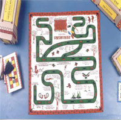 |
This is a game conceived by Kreeda, and follows the footsteps of Rama, Lakshmana and Sita through the forest. In the Ramayana, Dasharatha, Rama.s father is forced by an old promise to send Rama, his eldest son away to the forest for fourteen years. Rama is accompanied by his wife Sita and brother, Lakshmana. In the forest they have many adventures and face many hardships. Vanavaas - The Adventures in the Forest lets you understand their experiences and brings you face to face with the demons they meet in the forest.
|
| In the game, the footsteps are pictured as sandals - the old and traditional footwear worn by forest dwellers and rishis. The game is played with long dice which are the traditional dice in India.
This game begins with Rama and Lakshmana leaving Ayodhya and follows their adventures in the forest. The game takes you through the stay at Chitrakoot, Bharata.s encounter with Rama, the meeting with Shoorpanaka and the incident of the golden deer.
The idea of the game is to introduce the characters of the epic to children in a fun package which is easily absorbed and retained. It is suitable for children over five with some adult guidance.
Now available with paduka shaped coins. Order online
|
|
| SEARCH FOR SITA (A SEQUEL TO VANAVAAS) RAMAYANA SERIES PART . II |
| 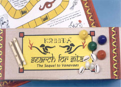 |
This is a game conceived by Kreeda, and is a sequel to Vanavaas. In the Indian epic - the Ramayana, Dasharatha, Rama's father is forced by an old promise to send Rama, his eldest son away to the forest for fourteen years. Rama is accompanied by his wife Sita and brother, Lakshmana. Vanavaas - The Adventures in the Forest follows their experiences until the kidnapping of Sita.
In this game, you follow the adventures of Rama and Lakshmana as they search for Sita and seek the help of the vanaras or monkeys.
Order online |
|
| BATTLE OF LANKA (THE WAR GAME) RAMAYANA SERIES PART . III
|
|
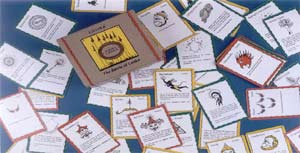 |
This is a game conceived by Kreeda, and is the third part of the Ramayana series. In the Indian epic - the Ramayana, Dasharatha, Rama.s father is forced by an old promise to send Rama, his eldest son away to the forest for fourteen years. Rama is accompanied by his wife Sita and brother, Lakshmana. Vanavaas - The Adventures in the Forest follows their experiences until the kidnapping of Sita.
In the second game, the Search for Sita, you follow the adventures of Rama and Lakshmana as they search for Sita and seek the help of the vanaras or monkeys. Hanuman finally finds Sita in Lanka where she is a prisoner of the demon king . Ravana.
Rama and Lakshmana, along with their new friends Sugriva and Hanuman
decide that the only option is to fight a war with Ravana and rescue
Sita. It was a mighty battle fought between the rakshasas led by
Ravana and the vanara army led by Rama.
The purpose of the game is to familiarize children with the
characters and events of the battle of Lanka in a fun and child
friendly manner. Colourful and well illustrated cards make this an
exciting game to play. It brings the players face to face with
legendary and colourful characters like Hanuman, Jambavan, Indrajit
and Kumbakarna. Each card provides information about a character or
event in the battle. Children will enjoy the cards and have fun
making up new ways to play the game.
Rama is invincible and represents the Power of Good. However, in the
epic he is told to seek the assistance of the vanaras led by Sugriva.
It is this that led to the concept of the game.
The research for this game is based on C. Rajagopalachari.s Ramayana
in English.
Order online |
|
| KATTAM VILAYATTU (THE SQUARE GAME - LEVEL I) |
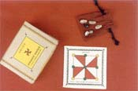
Kattam Vilayattu or the Square Game is a fun variation of noughts and crosses. Designed to be a pocket game that
can be carried around, it comes in three levels of increasing difficulty. It makes an ideal take home gift for parties or to carry along for travel. A two player game it is suitable for children over five.
Order online |
|
| KATTAM VILAYATTU (THE SQUARE GAME - LEVEL
II) |
|
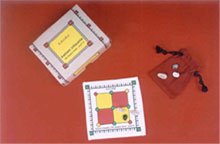 |
|
This is the second level of Kattam Vilayattu or the Square Game is a fun variation of noughts and crosses. Designed to be a pocket game that can be carried around, it comes in three levels of increasing difficulty. It makes an ideal take home gift for parties or to carry along for travel. A two player game it is suitable for children over five.
Order online |
|
|
|
| CHATURVIMSHATHI KOSHTAKA (A BATTLEFIELD GAME IN 24 SQUARES)
|
 |
This is a game drawn from an old book written in Sanskrit by
Harikrishna, son of Venkatram in the late nineteenth century. It is
interesting to read the first stanzas of the book and appreciate the
importance he gave to play.
.I hereby describe the organization, structure and rules of this
ancient shastra (games), the reason being that there is no such book
available and the scholars do not study them. In this book there is
a description of several board games, the intention of this shastra
being that people will enhance their brain power by playing them..
It was about the same time that Krishnaraja Wodeyar of Mysore
developed and promoted many similar interesting games.
The game we have here is a simple strategy game described by
Harikrishna as a game in 24 squares. We have used the Sanskrit
description he has given as the name of the game. Chathurvimshathi
Koshtaka simply means 24 boxes or squares.
This is a battlefield game where two players with eight coins each
literally battle it out to gain control of enemy territory.
All these are pocket size games making it easy to carry along and
convenient to play anywhere at all. Priced reasonably, they make
great return gifts for parties or for any occasion at all.
Kreeda plans to continue this sustained effort to research and
develop new games while continuing to spread awareness about the
value of our traditional games.
Order online
|
|
|
|
| AADU
PULI AATAM (THE TIGER AND THE GOAT) |
| 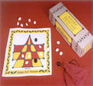 |
This is a two player game of skill, strategy and thinking like chess. There are 3 tigers and 15
goats. The tigers  try to kill the goats while the goats try to corner the tigers so they cannot move. This is a game requiring concentration and planning. Suitable for children over five.
Order online try to kill the goats while the goats try to corner the tigers so they cannot move. This is a game requiring concentration and planning. Suitable for children over five.
Order online |
|
| ASHTAA
CHEMMAA (EIGHT AND FOUR) |
 |
Four players can participate in this game much akin to LUDO. The purpose is to take your counters from
the starting point to the safety of home. However, the game is played with cowrie shells instead of dice. Suitable for children over five.
Order online |
|
|
|
| DAHDI
(IN A LINE) |
| 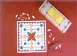 |
Two players are given 9 coins each, and try to get as many points as possible by getting 3 coins in a row.
Although the purpose is similar to noughts and crosses, the game is far more complex as coins can be moved and the opponent's coins can be removed. Suitable for children over five.
Order online |
|
| PALLANGUZHI (A CUP AND COIN GAME) |
|
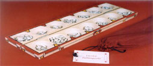
|
While Pallanguzhis were
traditionally made of wood, our current need is to conserve
forests and trees.
Trying to balance this need to revive games along with an
awareness of the environment, Kreeda has launched this new
Pallanguzhi made of MDF.
This is a type of hardboard, which is made from wood fibres glued
under heat and pressure. It can be made from almost any scrap wood
that is normally of limited value. Order online |
|
| GILLI
DANDA (THE STICK AND PEG GAME) |
| 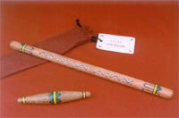
|
A game played with a stick and a peg, this outdoor game requires remarkable hand eye co-ordination. This Kreeda version has smooth edges and rounded corners making it more child friendly. This is a team game requiring a good deal of outdoor space. Parental supervision is required in young children.
Order online edges and rounded corners making it more child friendly. This is a team game requiring a good deal of outdoor space. Parental supervision is required in young children.
Order online |
|
| BAMBARAM
(THE TOP AND STRING) |
| 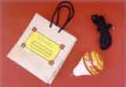 |
Spinning a top is a fun experience for children - a skill that unfortunately seems to be dying out.
Kreeda's bambarams are brightly coloured in the trademark red and yellow. The non-rust nails make the top safer for the children. Suitable for children over five.
Order online |
|
| FIVE
STONES |
| 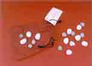 |
Properly rounded stones are provided for this popular game.Any number of people can
 play this game
which requires a great deal of hand eye co-ordination. Suitable for children over seven.
Order online play this game
which requires a great deal of hand eye co-ordination. Suitable for children over seven.
Order online |
|
|
THE SHELL GAME |
| 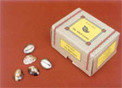 |
Played with cowrie shells, this is a fast paced but simple
game for all ages. As it can be played by any number of
people, the game is a wonderful way to spend a family evening. It is suitable for children over five. Order
online |
|
| GOLI (MARBLES) |
| 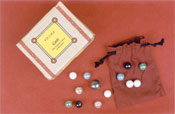 |
Numerous variations exist and the rich colours of the marbles fascinate youngsters.
This game which was once very popular is slowly dying out. Suitable for children over five and many players.
Order online |
|
| PARAMA PADA SOPANAM (STEPS TO THE HIGHEST PLACE) |
| 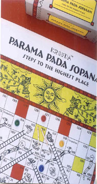 |
Parama Pada Sopanam means Steps to the Highest Place (where Parama Pada means highest place and Sopanam means steps). This is a traditional version of the popular game of Snakes and Ladders. The game was believed to be symbolic of a man's attempt to reach God. The ladders represent virtues and the snakes represent vices. The snakes carry names linking them to stories from our epics.
Kreeda has slightly modified the traditional game to appeal to today's children. Done on a 2 feet by 2 1/2 feet canvas the game is attractively designed and appealing. All the snakes in the games have names such as Bakasura, Kumbakarna etc. which are representative of certain vices. A booklet has been given with a short story of these
characters to make it more appealing to
children and parents who may not know the tales.
This game is suitable for two or more players of all ages. Order
online |
|
| THE
HOOP STICK |
|
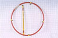 |
Perhaps the most versatile and popular of all games, the Hoop Stick is a fun way to play. Rolling the hoop along the way with the
stick requires a certain skill and sense of steering and direction. Suitable for children over five.
Order online |
|
| PALM-FRUIT ROLL ABOUT (NUNGU VANDI)
(Available Only in Seasons) |
| 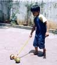 |
Sticks and stones. Fruit and seeds. This is what old games were often made off. There were few toy shops - those
days, and games were played with things around the house. And as the seasons changed these games changed too! Made of the palm fruit, this is a fun game for young children.
(AVAILABLE ONLY IN CHENNAI IN THE SUMMER SEASON) Order online |
|
| KALANAY BELANAY (BLACK ELEPHANT WHITE ELEPHANT) |
|
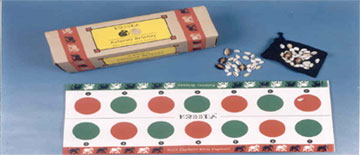 |
|
Kalanay Belanay, a game from Karnataka was taught to the Kreeda staff
by a lady anxious to see the games she played as a child passed on
to the next generation. This is a true representation of the value of
research and the role of all people in ensuring that these games are
preserved. An interesting game played with shells and board it is
unusual and exciting. It is suitable for children over five. Order online |
|
|
|